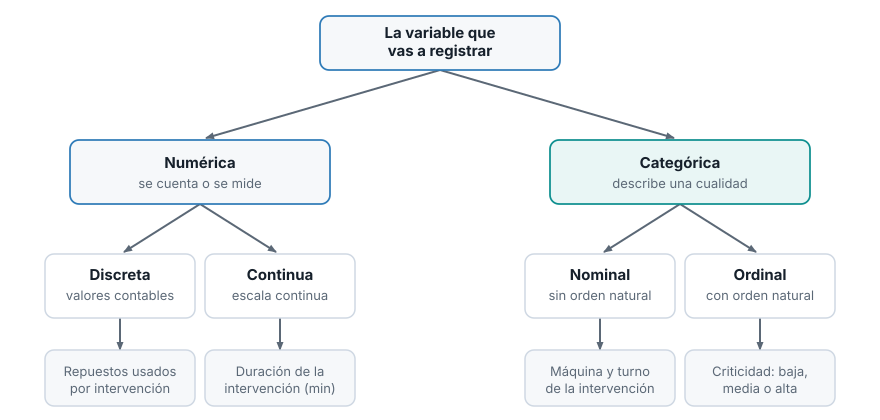
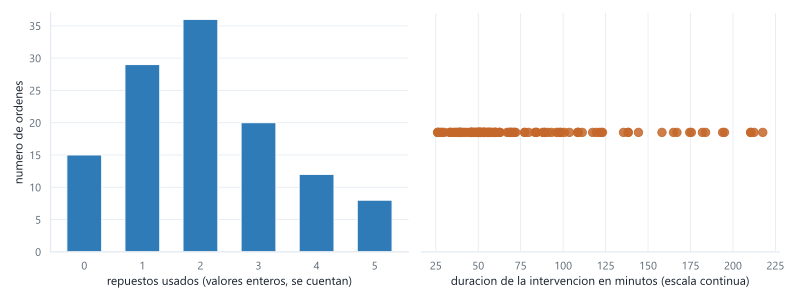
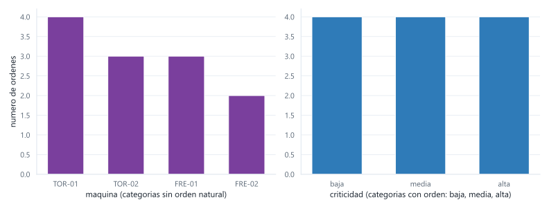
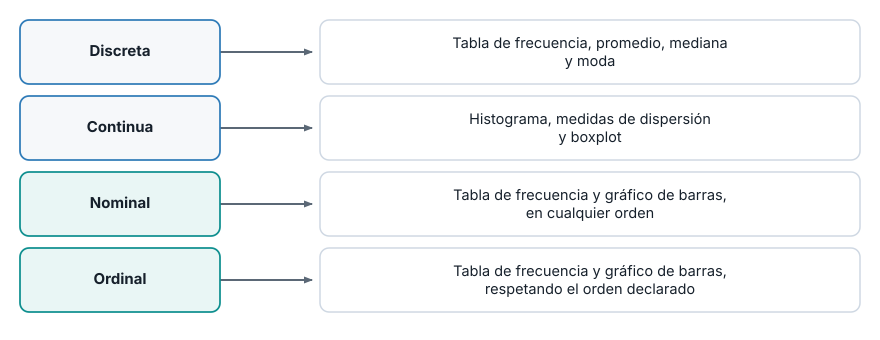

Estadística para Analítica
Tipos de variables
Oscar Leonel Sánchez Conde
Institución Universitaria Pascual Bravo
Ruta de la sesión
Primera parte
Cargar el dataset y ver los tipos que asignó pandas
La pregunta sobre criticidad
Dos preguntas para clasificar cualquier variable
Numéricas: discreta y continua
Segunda parte
Categóricas: nominal y ordinal
CategoricalDtype y el orden en pandasLa trampa del valor suelto
Caso de uso: una orden de trabajo nueva
Cargar el dataset
import pandas as pd= pd.read_csv("ordenes.csv" )print (ordenes.head())Doce órdenes de mantenimiento, siete columnas.
Los tipos que asignó pandas
La naturaleza de una variable la declaras tú, no la adivina la herramienta.
criticidad quedó como object
Pandas no sabe que baja, media y alta tienen un orden.
Esa palabra genérica, object, esconde información: hay un orden real y el software no lo ve hasta que se lo declaras.
Dos preguntas clasifican cualquier variable

Primera pregunta
¿El valor se cuenta o se mide?
Se cuenta, en unidades completas: numérica discreta .
Se mide, en una escala donde caben decimales: numérica continua .
Segunda pregunta
Si no es un número: ¿las categorías tienen un orden natural?
Sí lo tienen, sin inventar el criterio: categórica ordinal .
No lo tienen, o hay varios criterios igual de válidos: categórica nominal .
Numérica discreta: se cuenta
Repuestos usados, paradas no programadas en el mes, operarios asignados a una orden.
No hay un valor intermedio entre dos consecutivos: no existen 2.5 repuestos.
Numérica continua: se mide
Duración de la intervención, temperatura del rodamiento, vibración en milímetros por segundo.
Entre dos valores cualesquiera siempre cabe otro.
Verificación con datos reales
print (sorted (ordenes["repuestos" ].unique().tolist()))print (sorted (ordenes["duracion_min" ].unique().tolist()))
Discreta vs continua, en el mismo eje

Seis barras separadas, en valores exactos, contra una nube de puntos donde cualquier posición entre el mínimo y el máximo es posible.
Categórica nominal: sin orden
maquina: los códigos de torno y fresadora no tienen un antes y un después.
tipo de intervención: preventivo, correctivo y predictivo no forman una escala.
Categórica ordinal: con orden
criticidad: baja, media y alta tienen un orden que cualquiera reconoce, aunque no puedas medir la distancia entre una y otra.
El error, explicado
print (ordenes.sort_values("criticidad" )[["orden" , "criticidad" ]].to_string(index= False ))
Pandas ordenó por texto. Alfabéticamente. El software no se equivocó: hizo lo que object permite.
Nominal vs ordinal, en el mismo eje

La izquierda se puede reordenar sin perder nada. La derecha no: baja, media, alta es el único orden que tiene sentido.
Declarar el orden
from pandas.api.types import CategoricalDtype= CategoricalDtype(= ["baja" , "media" , "alta" ], ordered= True "criticidad" ] = ordenes["criticidad" ].astype(orden_criticidad)print (ordenes["criticidad" ].dtype)
El mismo sort_values, sin cambiar nada más
La diferencia no está en el método. Está en lo que le dijiste al dato sobre sí mismo.
Ahora el orden sirve para filtrar
= ordenes[ordenes["criticidad" ] > "media" ]print (urgentes[["orden" , "maquina" , "criticidad" ]].to_string(index= False ))
La trampa: un valor suelto pierde el orden
= ordenes["criticidad" ].iloc[0 ]print (type (valor_suelto), valor_suelto)print (ordenes["criticidad" ].iloc[0 ] < ordenes["criticidad" ].iloc[1 ])
.iloc entrega texto normal. La comparación vuelve a ser alfabética, sin avisar.
La solución: .cat.codes
print (ordenes["criticidad" ].cat.codes.iloc[0 ] < ordenes["criticidad" ].cat.codes.iloc[1 ])El orden vive en la columna completa . Si necesitas comparar dos valores sueltos, usa los códigos internos.
Caso de uso: una orden de trabajo nueva
Cuatro columnas nuevas, sin escribir todavía una línea de análisis:
Temperatura en grados
Se mide
No aplica
Numérica continua
Nombre del técnico
No es número
Sin orden
Categórica nominal
Aprobada por supervisor
No es número
Sin orden entre sí
Categórica nominal
Nivel de desgaste
No es número
Leve < moderado < severo
Categórica ordinal
¿Y el sí/no de “aprobada”?
Parece que pudiera codificarse como 1/0 y tratarse como número. No lo es: sumar o promediar esos ceros y unos no produce una cantidad con sentido propio. Lo que tiene sentido es contar cuántas órdenes caen en cada categoría, que es el tratamiento de una variable nominal.
Qué análisis habilita cada tipo

Lo que viene
Semana 3. Con las variables ya clasificadas, tablas de frecuencia e histogramas para las numéricas, y medidas de localización y dispersión.Semana 4. Boxplots y cuantiles para las numéricas, tablas de contingencia y gráficos de barras para las categóricas, en su orden correcto cuando aplique.Semana 5. Gráficos de dispersión y condicionales, e informe exploratorio para cerrar la Unidad 1.